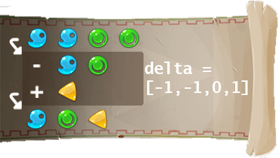

<div style="text-align: center">
  <h2>Vous venez d'atteindre la ligue supérieure.</h2>
  Vous pouvez désormais <keyword>lancer des sorts</keyword> pour <keyword>transformer</keyword> un ensemble d'ingrédients en un autre.
  <div class="small"></div>
  <div class="small">Consultez l'énoncé mis à jour pour plus de détails.</div>
</div>